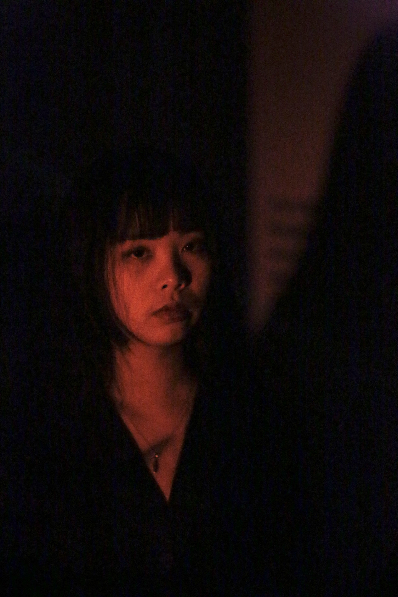
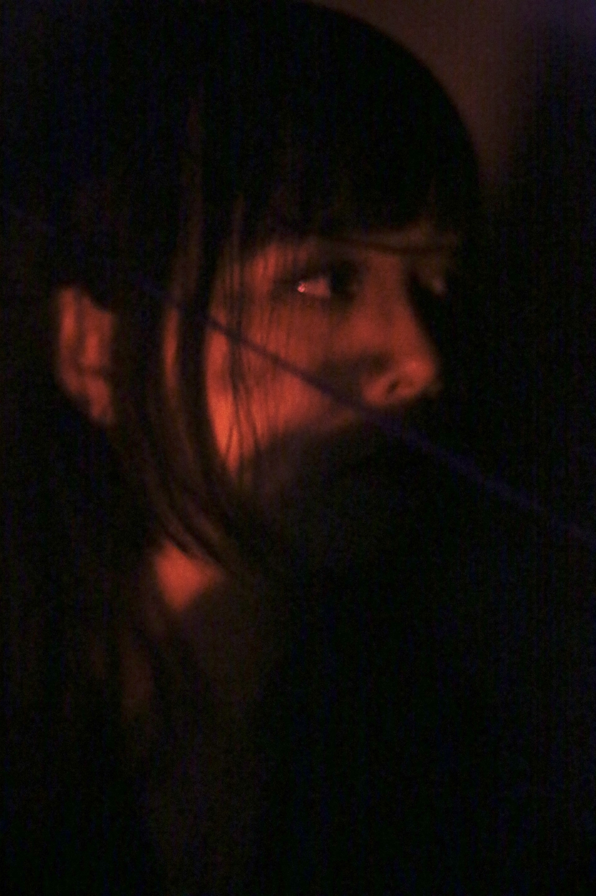
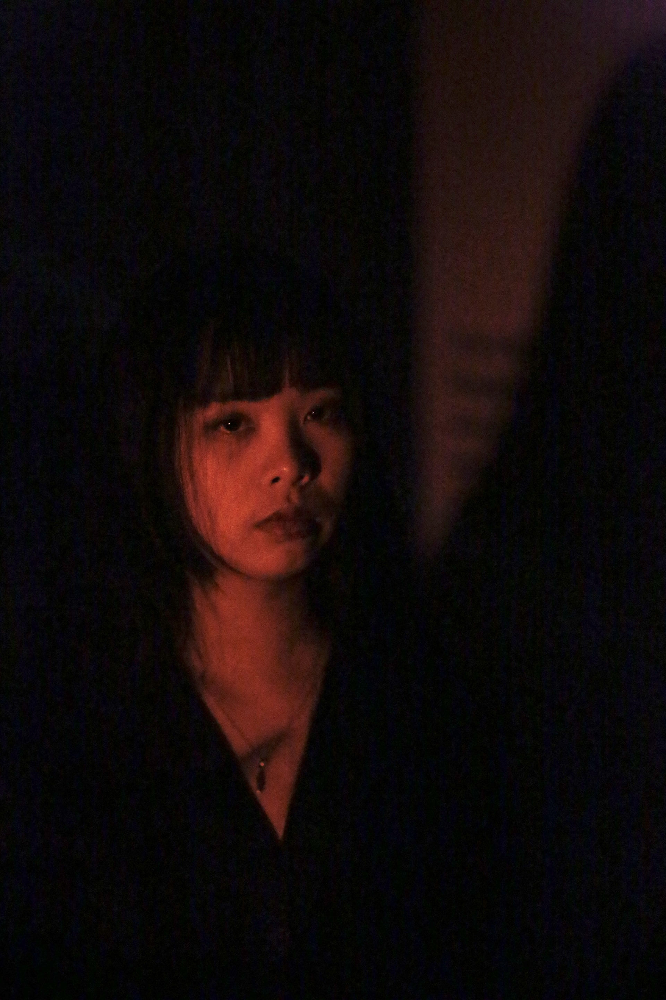
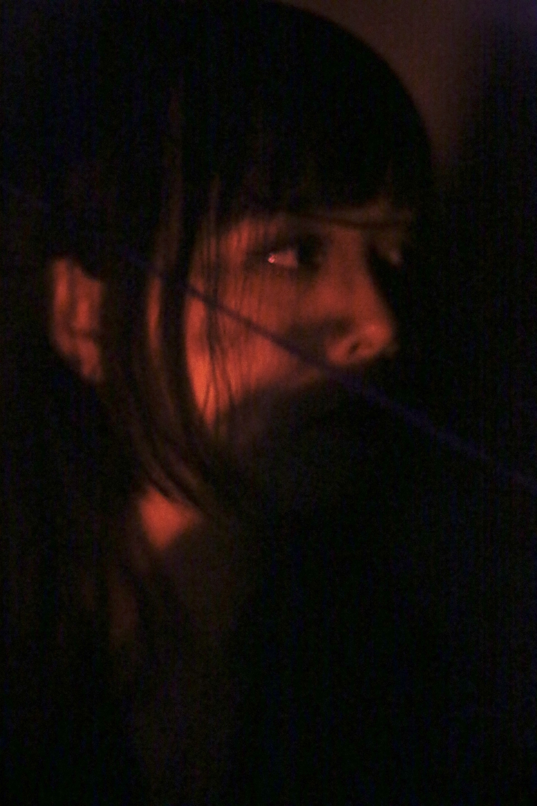

Participated as one of the lead creators in the programming and music development of the Stardew Valley fan-made mod for Baldur’s Gate 3, *Baldur’s Village*. After its release, the mod received extensive coverage and support overseas, including recognition from the *Stardew Valley* creator Concerned Ape, while *Baldur’s Gate 3* developer Larian Studios’ CEO Swen Vincke and original music director Borislav Slavov have repeatedly shared and expressed support on X.
“A new village has recently been built north of Pelican Town, and its new residents seem... rather unusual. You can find the entrance to Baldur's Village at the top of the southern mountain map, right next to Linus' tent. ”
Baldur's Village is a large expansion mod for Stardew Valley, inspired by Baldur’s Gate 3. It introduces a brand-new village map and NPCs while staying true to the game's original atmosphere. Among them, Astarion features a fully developed personal storyline and is available for marriage.
【Nexues - Baldur's village Download】 https://www.nexusmods.com/stardewvalley/mods/30888
【Video Commentary: How Many Steps to Put Baldur’s Gate 3 into Stardew Valley? (Chinese)】 https://www.bilibili.com/video/BV1eHRsYTEFZ
„Äêùêèùê•ùêöùê≤ùê•ùê¢ùê¨ùê≠¬∑the music I covered】 https://www.bilibili.com/video/BV17DRpYzEv3
 


